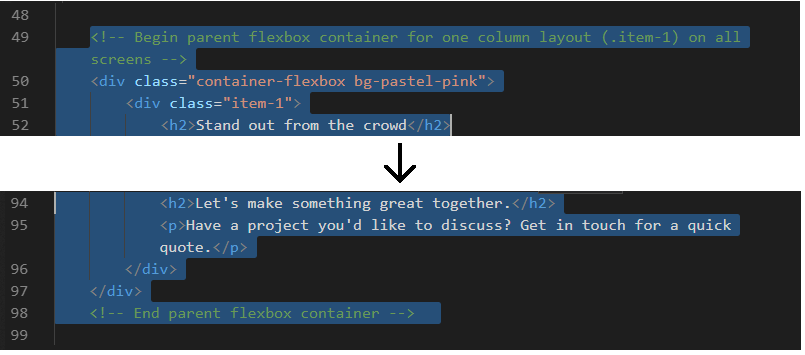
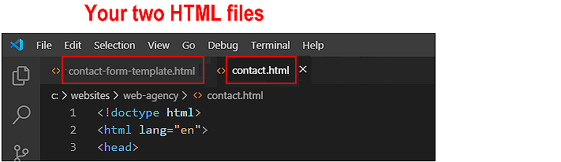
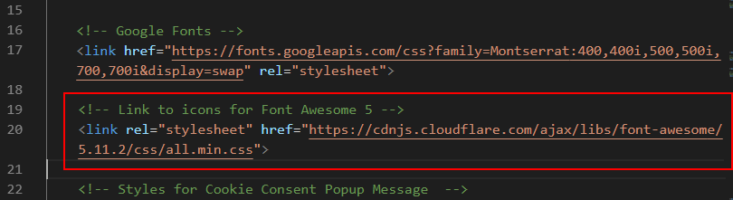
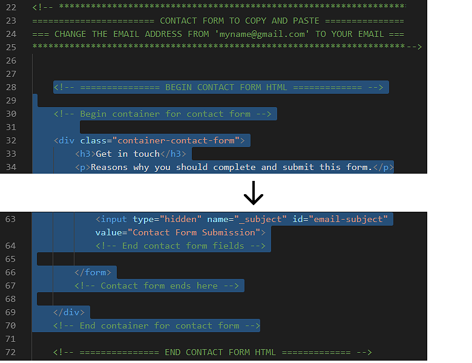
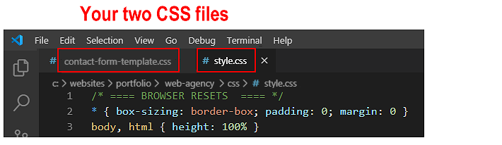
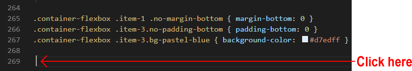
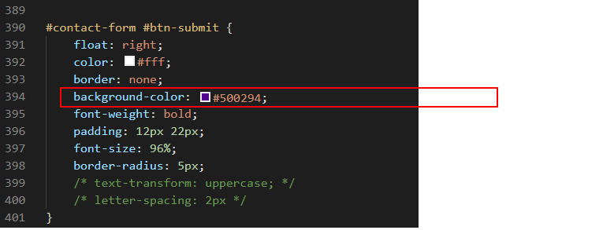

Your first step is to download the image file for new 'Contact Form' web page you will create.
Right-click the image below and, from the pop-up menu displayed, choose Save Image As
Download the image file to your websites\portfolio\web-agency\assets\img sub-folder:
Create your Contact Form web page
Your new Contact Form web page will be similar in design to the already existing three pages in your sample 'Web Agency' sample website and will use the same stylesheet. So you can use the current Home Page as the basis for creating the new page.
Start Visual Studio Code and follow these steps.
From your websites\portfolio\web-agency folder, open the web page named index.html.
From the File menu, choose the Save As command.
Save the HTML file in the same folder as the three other web pages, and give the new file the following name:
contact.html
You are now ready to edit your new contact.html web page.
Edit your Contact Form web page
You need to update the content of your new contact.html web page.
In Visual Studio Code, edit the <h1> and <h2> headings in the hero section by replacing the current text with the following:
<h1>Your partner in digital success<h1>
<hr>
<h2>Working with clients to build digital campaigns rich in vision, meaning and creativity.<h2>
Replace the image file used in the hero section with this one.
After the end of the hero block, you can delete the rest of the HTML and text on this page.
Remove everything all the way down to the <!-- JavaScript for Cookie Consent Popup Message --> message.

When finished, save your contact.html web page.
Work with the template contact form HTML file
In this next step, you will work with two HTML files:
The template file you will copy from and
The web page you will copy to.
In Visual Studio Code, from your websites\templates folder, open the following HTML file:
contact-form-template.html
From your websites\portfolio\web-agency folder, open the web page named contact.html.
If you have any other files open in Visual Studio, you may wish to close them.

This will help you to focus only on the two HTML files you will be working with.
Add the <head> link for the Font Awesome icons
Your contact form will use Font Awesome 5 icons. So you need to copy and paste the link to the Font Awesome stylesheet CSS file from the <head> section of the contact form template file to the <head> section your contact.html web page.
In the contact form template file, select the Font Awesome link from the <head> section and copy it.
In your contact.html web page, paste the copied Font Awesome link in the <head> section, just after the link to Google Fonts as shown below.

When finished, save your contact.html web page.
Copy-and-paste the contact form HTML
Your next step is to copy content from the contact form template file into your web page.
In the contact form template file, select and copy the form section.

In your contact.html web page:
Scroll down to near the end of the web page, to just before the JavaScript for Cookie Consent Popup Message.
Press the ENTER key a few times to open up some new lines of blank space.
Paste the copied contact form content.
When finished, save your contact.html web page.
You can now close the contact-form-template.html file. You are finished working with it.
Work with the template contact form CSS file
In your next step you will work with two CSS files:
The template CSS file you will copy from and
The stylesheet you will copy to.
In Visual Studio Code, from your websites\templates folder, open the following CSS file:
contact-form-template.css
From your websites\portfolio\web-agency\assets\css folder, open your stylesheet named style.css.
If you have any other files open in Visual Studio, you may wish to close them.

This will help you to focus only on the two CSS files you will be working with.
Copy-and-paste the contact form CSS
In this step you will copy from the contact form template CSS file into your style.css file.
In your contact form template CSS file, select and copy the contact form section.
In your style.css file:
Scroll down to the end of the stylesheet and click on the last empty line.

Press the ENTER key a few times to open up some new lines of blank space.
On the new last line, paste the copied contact form styles.
When finished, save your style.css stylesheet.
You can now close the contact-form-template.css file. You are finished working with it.
In your web browser, the contact.html web page should now look as shown below.
Update your Contact Form web page and stylesheet
Here are the final steps to updating the Contact Form web page.
In Visual Studio Code, open your contact.html web page and style.css stylesheet.
In the contact.html file, replace the <h3> sub-heading and the <p> paragraph text as follows.
<h3>Let's talk<h1>
<p>Do you have a project you’d like to discuss with us. If so, please complete and submit this form.</p>
Ensure that you have changed the emal address in the contact form from myname@gmail.com to your own email address.
You can now close save and close the contact.html web page.
In your style.css file, change the font colours of the form's <h3> sub-heading and the <p> paragraph text as shown below.
Change the background colour value for the .container-contact-form style as shown below.
Change the background and border colours of the form fields as shown below.
Change the background-color value for the 'Submit' button as shown below.

Save your style.css file.
You are now finished working with your Contact Form page. View it in your web browser. It should look as shown below.
Validate your HTML file
To check your HTML is correct, use the official W3C Markup Validation Service. Follow these steps.
Copy and paste your contact.html file into the box named Enter the Markup to validate.
Click the Check button.
If you see any errors, return to your HTML file, fix the errors, save the file, and copy the entire file again.
In the HTML Validator, click the Back button of your web browser to again display the Validate by Direct Input tab. Click once in the tab and paste in your corrected HTML file. Your new, pasted-in file will replace the earlier version. Finally, click the Check button.
Validate your CSS file
To check your CSS is correct, use the official W3C CSS Validation Service. Follow these steps.
Copy and paste your style.css CSS file into the box named Enter the CSS you would like validated.
Click the Check button.
If you see any errors (other than those related to the fluid typographic equation, as shown below), return to your style.css file in Visual Studio, fix the errors, save the file, and copy the entire file again.
In the CSS Validator, click the Back button of your web browser to again display the By direct input tab. Click once in the tab and paste in your corrected CSS file. Your new, pasted-in file will replace the earlier version. Finally, click the Check button.
Upload your project to GitHub
The final step is to upload your project to GitHub.
All the files for this project are in a sub-folder named web-agency of your websites/portfolio folder.
So you will need to upload this web-agency sub-folder, which contains both files and other sub-folders, to your account on GitHub.
Open a new tab in your web browser and go to GitHub.com. If you are not already signed in to your GitHub account, sign in now.
On your GitHub home page, click the name of the repository ('repo') that holds your web pages. Its name will look as follows, where username is your chosen username on GitHub.
username.github.io
The next GitHub screen displayed should look as follows. Click on the portfolio folder.
On the next screen displayed, click the Upload files button.
In File/Windows Explorer on your computer, display your portfolio folder and then drag-and-drop the web-agency folder to the GitHub tab in your web browser.
After uploading the web-agency folder, scroll down to the bottom of the GitHub screen, enter a short message in the Commit changes box, click the Commit changes button, and wait for the upload to complete.
Your 'Web Agency' project web page with the Contact Form web page is now published on GitHub at a web address similar to the following, where username is the username you have chosen for your GitHub account: